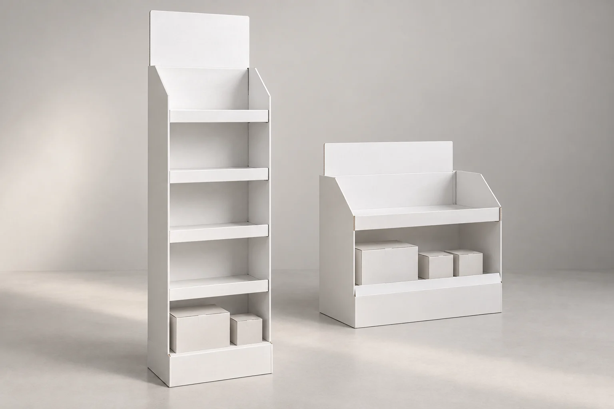
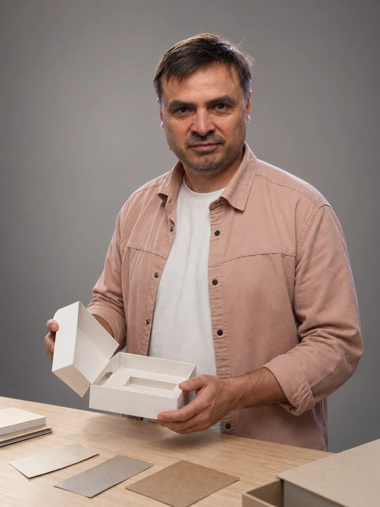

Картонные коробки
Складные коробки и жёсткие коробки для наборов. Под размеры товара, с печатью и нужной отделкой.
Динар Динмухаметов · лично веду ваш заказ
Разработка конструкции, образец и тираж для компаний. Подгоним упаковку под ваш продукт, согласуем внешний вид и изготовим нужное количество.
На заказ · по вашим размерам · работа с юрлицами


Человек, которому можно поручить производство
Нужно изготовить коробку, дисплей или стойку, но непонятно, кому поручить заказ? Я уточню требования, организую образец и лично проконтролирую выполнение.
Познакомиться ближеЧто нужно изготовить
Складные коробки и жёсткие коробки для наборов. Под размеры товара, с печатью и нужной отделкой.

Напольные и паллетные дисплеи. Разработка под нагрузку, способ сборки и требования магазина.
Для продукта, набора или образцов. Важно не только упаковать, но и точно разместить всё внутри.

Шоубоксы, настольные дисплеи и SRP. Товар удобно привезти, выставить и пополнить.
Белые образцы помогают увидеть конструкцию без брендинга. Это сгенерированные иллюстрации, не портфолио. Для вашего заказа разработаем и согласуем физический образец.
Обсудим оба тиража, материал и комплектацию. Это примеры количества для расчёта — возможность изготовления и условия зависят от изделия.
Из чего складывается цена
Эскиз будущей фотосъёмки · AIОпыт — в каждом решении
Разберусь в вашем продукте, организую разработку и образцы. Вместе проверим конструкцию, выберем материалы и согласуем результат перед тиражом.
Начните с того, что есть
Помогу понять, какой следующий шаг нужен именно вашей задаче.
Помогу перевести замысел в понятные требования к изделию.
Разберём конструкцию и то, что нужно сохранить или изменить.
Уточним параметры, проверим материалы и условия изготовления.
Можно отдельно разобрать смету и производственное решение.
Как я работаю
Получаю товар или его параметры. Уточняем задачу, комплектацию и нужные тиражи.
Разрабатываем конструкцию, подгоняем размеры коробки и ложемента. Проверяем посадку товара на беляке и вносим правки.
Подбираем материалы и отделку. Согласуем цветной образец и фиксируем спецификацию изделия.
По утверждённой спецификации рассчитываю нужные количества. После согласования организую изготовление и контролирую результат.
Полезное об упаковке
Сначала — изделие
Образец позволяет проверить решение руками: как сидит продукт, открывается крышка и собирается конструкция.
Фиксируем размеры, материал, ложемент, печать и отделку. Расчёт тиража опирается на согласованное изделие — с понятным составом и комплектацией.
Начнём с разговора
Пришлите фото товара, размеры и примерное количество.
Помогу определить, с чего начать разработку.
Динар Динмухаметов
Ваш собеседник на всём пути
Работаю с юридическими лицами. Макеты и файлы можно приложить в выбранном мессенджере.